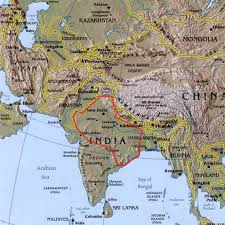

Sanskrit is a member of the Indo-Iranian sub-family of the Indo-European family of languages. Its closest ancient relatives are the Iranian languages Old Persian and Avestan.

In order to explain the common features shared by Sanskrit and other Indo-European languages, many scholars have proposed migration hypotheses asserting that the original speakers of what became Sanskrit arrived in what is now India and Pakistan from the north-west some time during the early second millennium BCE. Evidence for such a theory includes the close relationship of the Indo-Iranian tongues with the Baltic and Slavic languages, vocabulary exchange with the non-Indo-European Uralic languages, and the nature of the attested Indo-European words for flora and fauna.
The earliest attested Sanskrit texts are Brahmanical texts of the Rigveda, which date to the mid-to-late second millennium BCE. No written records from such an early period survive, if ever existed. However, scholars are confident that the oral transmission of the texts is reliable: they were ceremonial literature whose correct pronunciation was considered crucial to its religious efficacy.
From the Rigveda until the time of Panini (fl. 4th century BCE) the development of the early Vedic language may be observed in other Vedic texts: the Samaveda, Yajurveda, Atharvaveda, Brahmanas, and Upanishads. During this time, the prestige of the language, its use for sacred purposes, and the importance attached to its correct enunciation all served as powerful conservative forces resisting the normal processes of linguistic change. However, there is a clear, five-level linguistic development of Vedic from the Rigveda to the language of the Upanishads and the earliest Sutras (such as Baudhayana).